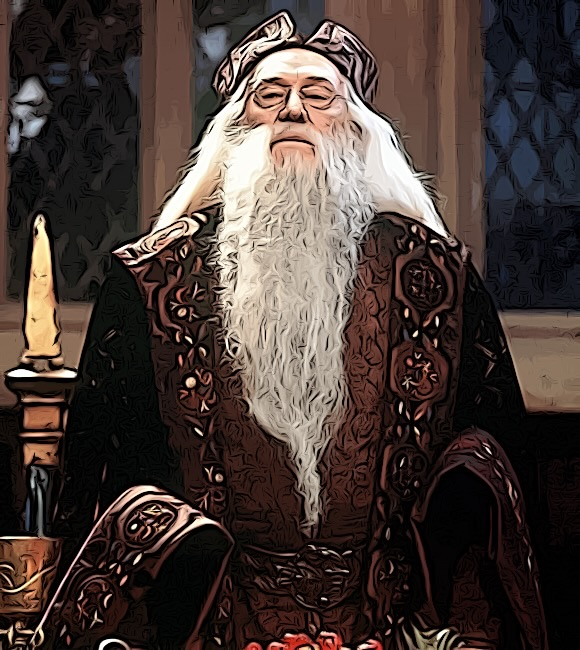

Steckbrief
Name: Albus Percival Wulfric Brian Dumbledore
Geburtsdatum: Sommer 1881
Eltern: Kendra und Percival Dumbledore
Herkunft: Mould-on-the-Wold, England
Zauberstab: Holunderholz mit einem Kern aus Schwanzhaar eines Thestrals
Zugehörigkeit: Gryffindor
Informationen zum Charakter
Albus Dumbledore wird im ersten und zweiten Film von Richard Harris verkörpert.
Er ist der langjährige Schulleiter von Hogwarts und einer der mächtigsten Zauberer seiner Zeit.
Dumbledore ist bekannt für seine Weisheit, Güte und seine Fähigkeit, schwierige Situationen zu bewältigen.
Er ist ein wichtiger Verbündeter für Harry Potter und hilft ihm bei der Bekämpfung des dunklen Zauberers Lord Voldemort.
Informationen zum Schauspieler
Albus Dumbledore wird im Film von Richard Harris verkörpert.
Im ersten und der zweite Teil wurden Albus Dumbledore von Richard Harris gespielt.
Richard Harris ist jedoch am 25. Oktober 2002 verstorben.
Seit dem wird die Rolle von Michael Gambon verkörpert, welcher die Rolle dann bis zum Ende verkörpert.